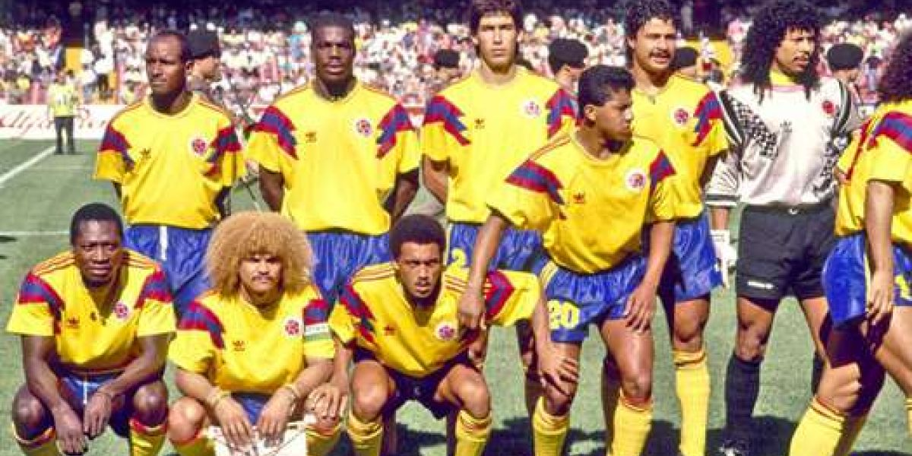

LOS PRIMEROS JUGADORES DE COLOMBIA
Los primeros jugadores de fútbol de Colombia incluyen a Efraín el Caimán Sánchez y Gabriel Ochoa Uribe1. Otros futbolistas destacados en la historia de Colombia son Mario Yepes, Arnoldo Iguarán, Oscar Córdoba, Antony de Ávila, Andrés Escobar, Iván Ramiro Córdoba y Juan Pablo Ángel2. Desde los pioneros que introdujeron el fútbol en Colombia hasta la generación dorada de los años 90 y las estrellas contemporáneas, estos jugadores han dejado una huella imborrable4. En el primer partido de Colombia frente a Uruguay, Francisco Zuluaga se convirtió en el primer jugador colombiano en anotar un gol en un Mundial de fútbol
